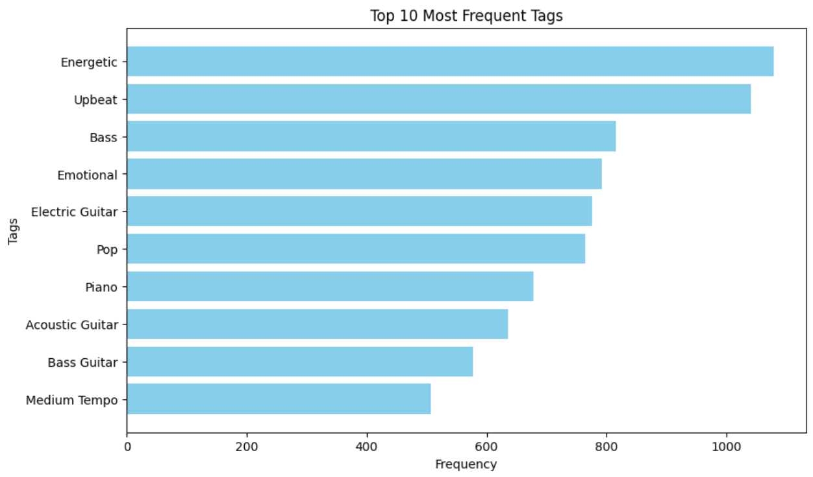

Fine-tune LLM for SONIQUE
Fine-tuning a Large Language Model (LLM) on the caption to tags stage may enhance the performance of SONIQUE. To achieve this, I conducted experiments on fine-tuning the mistral-7b model using paired video descriptions and audio tags.
Mistral-7B:
Mistral-7B Fine-tuned:
Mistral-7B:
Mistral-7B Fine-tuned:
Mistral-7B:
Mistral-7B Fine-tuned:
Conclusion:
The fine-tuned model's effectiveness appears to be constrained by the nature of the training data, leading to less variety in the generated tags. Previously, the LLM exhibited a high degree of creativity in generating diverse tags for music generation, offering a broad range of tags that enriched generation process. However, after fine-tuning, the generated tags have become more fixed, with a noticeable preference for fast-tempo music, rock, and disco genres.
To investigate the cause of this issue, I plotted the top 10 most frequent tags from the paired video description and audio dataset. Here is the chart showing these tags:
The plot confirms that the dataset used for fine-tuning heavily influences the model's output, resulting in a narrow range of tags mainly associated with high-energy music genres like rock and disco. This suggests that the paired dataset's characteristics lead to the model producing repetitive and genre-specific tags, rather than the diverse range previously generated.
- Dataset Composition: The lack of the diversity in the fine-tuned dataset causes the limited range of generated tags in the caption to tags stage. Having a large scale, diversity dataset could help improve the performance and the creativity of the model.Incorporating a wide array of video descriptions and audio files representing various tempos, genres, and moods is crucial.
- Overfitting: Due to the limited number of paired samples (only 3000 pairs), the model may be overfitting during the fine-tuning process. This overfitting results in the model generating repetitive and less varied tags.
Even though the result not being as expected, the experience has been valuable in understanding the impact of dataset diversity and overfitting on model performance.